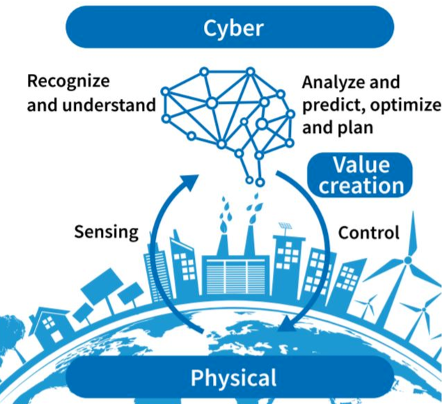

Our CPS computational learning laboratory is dedicated to advancing the fields of cyber-physical systems (CPS) through the integration of computational learning approaches. With a multidisciplinary approach, the lab gathers insights from computer science, control theory, system analysis, and data-driven methods to tackle the challenges posed by CPS. We develop novel algorithms, models, and optimization techniques to enhance the performance, robustness, and intelligence of CPS applications. By leveraging the power of machine learning/deep learning, real-time systems, large-scale datasets, and advanced analytics, the laboratory aims to create innovative solutions to unravel complex dynamics, uncover patterns, and make informed decisions in CPS. Through collaborations with industry and academia, the CPS Computational Learning Laboratory strives to make significant contributions, driving the adoption of intelligent and resilient CPS in the real world.
C O N T A C T
Group Head: Fangyu Li (李方昱)
Email: fangyu.li@bjut.edu.cn